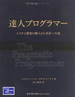
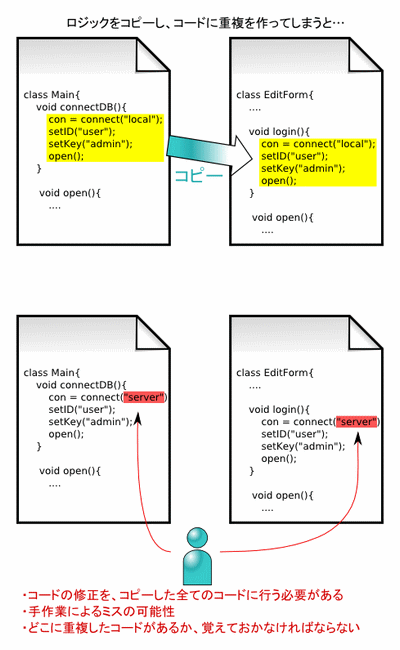

株式会社 アイプランニング
Towa Edogawabashi building 8F
Yamabuki-cho 347
Shinjuku-ku Tokyo
Phone: 03-5225-1147
DRY原則、コードの自動生成、アジャイル開発手法をキーワードに、「達人プログラマー」の内容をまとめました。
「達人プログラマー」から学ぶ効率的な開発手法
DRY原則、コードの自動生成、アジャイル開発手法をキーワードに、「達人プログラマー」の内容をまとめました。
プログラミング１年生の新人です。
先輩に「達人プログラマー」という本を貸していただいています。
自分の経験に照らし合わせて、大事だと考えたことをまとめてみようと思います。
「達人プログラマー」とは
達人プログラマー―システム開発の職人から名匠への道
[Amazon.co.jp - 達人プログラマー]

(画像はAmazon.co.jpより引用)
著者
Andrew Hunt（金融や通信業界などでソフトウェア開発を行っていたエンジニア・コンサルタント）
David Thomas（Eclipseの開発元であるIBM OTI Labsの創業者）の二人で書かれています。出版は2000/11です。
また、Andrew Huntは「アジャイルマニフェスト」の起草者でもあります。
最近では、Rubyの本なども共著しているようです。
主な内容
著者の実体験や、理解しやすいたとえ話を用いて、
システム開発で身に着けるべきスタイルについて述べています。
コード例も多く示されており、
C, JAVA, Perlで記述されています。
回答例では細かい所まで気配りされていて驚かされます。
例えば、コード・ジェネレータの回答例で「編集してはいけない」旨の
コメントを生成する部分がありました。
他のメンバーがコードを閲覧する時のことを考えると、
確かにこういった気配りは重要です。
「実用的」（原題はThe Pragmatic Programmer）を掲げているだけあり、
TIPS的に細かく分かれた記述がなされています。
一つ一つに触れているとキリがありませんから、
自分なりに、勉強になったなと感じられる部分をピックアップします。
ＤＲＹ原則
「Don't Repeat Yourself」つまり「システム上の知識を、重複なく、明瞭で、信頼できる表現にする」ことを原則としています。
情報の二重化は、コードのコピーペーストや、パラメータのハードコーディング、あるいは見落としなどでいつでも発生しうるものです。情報の二重化が発生すると、修正を数箇所にわたって行わなければならないので、メンテナンス性が落ち、手作業によるエラーが発生しやすくなります。

情報の二重化はやりがちです…。特に手抜きで二重化をやってしまった際は、コードのメンテナンスで泣きを見ることが多くありました。コードのコピーペーストをしたり、設定をハードコーディングしたりといったことは避けようと思います。
コードの自動生成
コード・ジェネレータを利用すると、タイピング量の削減や、データベース・スキーマに合わせたコードの生成による二重化の防止など、さまざまな利点があります。ソースを作成する労力を削減するための「消極的なコード・ジェネレータ」と、ビルド時に実行し、特定部分の変更を別のソースに適用する「積極的なコード・ジェネレータ」を紹介しています。
コード・ジェネレータをビルドに組み込むというのは、試す価値があると思いました（チームで行うとなると導入の手間が発生してしまいますが）。
ドキュメントの自動生成
ドキュメントの作成においても自動生成で二重化を防ぐことができます。著者の一人はドキュメントからテストコードを生成するプログラムを書いています。「達人プログラマー」中で引用されているコードも、手でコピーペーストするようなことはせず、perlで自動的に挿入され、コードが更新されれば変更点を反映できるようにしているそうです。
ドキュメントまで自動生成というのは徹底していて、実現できれば効果的に思えます。JavaDocでAPIのドキュメントまでは生成できるようにはしてありますが、実際はほとんど活用できていません。このページも現在テキストエディタで執筆していますが、htmlに変換する際手作業による間違いが混入することは当然ありえます。
曳光弾アプローチ
作り直すことを前提としたプロトタイプに対して、
曳光弾アプローチでは、最終的に製品にする「試作品」を作ります。
従来の手法では、アプリケーションが完成するまでユーザは製品の全体像を把握することはできませんでしたが、曳光弾アプローチでは早いうちからユーザにものを見せることができ、フィードバックを受けることができます。
私はアプリケーションが全て出来上がってから見せることが多く、大きな仕様の間違いや手戻りが発生することがよくありました。今後は小さな単位で開発して、小さなリリースを心がけようと思います。
プレイン・テキスト
知識は全てプレイン・テキストに保存することで、さまざまなツールから活用することができるようになります。
たとえば、
・使い慣れたエディタのマクロ機能
・UNIXのシェルおよび単機能ツール（grepやsedなど）
・文字列処理の得意な言語（perlなど）
から検索やコードの生成を行うことができます。
また、XMLなどの構造化されたテキストファイルは、人間から見ても理解のしやすいデータです。
UNIXのシェルは今まで使ったことがなかったので、趣味から使い始めてみようと思っています。
テストの自動化
いつでもどこでもテストができるようにするべきとしています。
mainに記述するか、xUnitなどのテスティングフレームワークを利用することができます。
また、テストコードを記述することで、
該当モジュールの持つ全機能の使用例
回帰テストの生成手段
としても利用できます。
さらに、本書の考え方と共通する部分も多い「アジャイル」「ＸＰ」についても調査してみました。
「アジャイルソフトウェア開発」について
アジャイルは、迅速かつ適応的にソフトウェアを開発する手法です。[wikipedia]
「agile」には「素早い・敏捷な」という意味があり、以前は軽量プロセス開発と呼ばれていました。
仕様変更が多く、規模の小さな（１０人以下）チームに適用することで、
より効率的にソフトウェアを開発することが出来るとされています。
アジャイル開発手法では、以下のような事柄を重視します。
・包括的なドキュメントよりも、動くソフトウェアを優先する。
→仕様の変更で時代遅れになったり、誤りがあったりするドキュメントの作成に注力するより、
動くソフトウェアを作ることを最優先します。
ただし、ドキュメント自体の重要性を否定するものではありません。
・プロセス・ツールよりも、個人の相互関係を優先する。
→アジャイルでは、チーム内の情報伝達や、協力体制を重視します。
・契約よりも、顧客とのコラボレーションを優先する。
→小さなリリースを通じて、顧客の要望を引き出していきます。
・スケジュールよりも、変化への対応を優先する。
→開発の終盤であろうと、要求内容への変化を歓迎しましょう。
アジャイルは手法群であり、複数の手法が提唱されています。
数あるアジャイル開発手法の中でも、特に「エクストリーム・プログラミング」(XP)が有名です。
ＸＰはケント・ベックによって提唱された手法です。
特徴として、ビジネス上の要求が刻々と変化する状況において効果的であり、
１０〜１２個からなる具体的なプラクティス（実践）が定義されています。
たとえば：
・反復
→設計、実装、テストを短く繰り返すことで、システムの品質を高めていく手法。
・テスト駆動開発
→コーディングよりテストを先に記述することで、仕様を明確化する。
・ペアプログラミング
→二人一組でコーディングを行う。常にコードレビューが行われ、問題解決に要する時間も短縮される。
など、チームで実践すべきいくつかの習慣を挙げています。
ちなみに、「達人プログラマー」の著者の一人である、Andy Huntが
「アジャイルプラクティス 達人プログラマに学ぶ現場開発者の習慣」[Amazon.co.jp - アジャイルプラクティス]という本を書いています。
まとめ
読者自身に考えさせる部分もあり、密度の濃さが感じられる本です。
チャレンジ、演習も可能な部分は手をつけてみましたが、
新米の私にはかなりきつい部分が多いです（汗）
適用すべきか？
今自分の置かれている状況に、本のやり方を適用できるかどうか、常に考える必要がありそうです。
これは、上司にこういうこともあるよ、と教えていただいたのですが、
「たとえば、ある業務を自動化をしたとして、
もしプログラムに障害が起きたとき、その業務を人間が代行できるのか」
というケースも想定する必要が出てきます。
プログラムで出来て人間に出来ない業務を作ってしまうと、
障害が起きたときに、復帰が出来ないという事態に陥ってしまいます。
この場合、システム開発者は、単にシステムの自動化を行えばいいというわけではなく、
リスク管理も含め、合理的な解を提示できなければいけない、ということだと思います。
ソースコード管理、ソース生成やテストの自動化についても書かれていますが、
プロジェクトに適用するにあたって、
ツールをチーム全員が使えるようにならなくてはいけないですし、
移行にかかる手間も無視できない場合が多いです。
効果にコストが十分見合うかどうかを考えて適用する必要があります。
アジャイル開発手法の向き不向き
バリー・ベームとリチャード・ターナは、アジャイル開発が向いている状況を以下に挙げています。
・クリティカルではないシステム (顧客の業務に重大な支障をきたす可能性がなく、人命に関わらないシステム)
・熟練した開発者が参加する場合
・開発中に頻繁に要件が変わる場合
・開発者が少ない場合
・混沌とした状況に意欲をもって取り組む組織的文化
それとは逆に、アジャイルではなく計画を重視した開発が向いている状況を以下に挙げています。
・クリティカルなシステム (顧客の業務に重大な支障をきたす可能性がある、もしくは人命に関わるシステム)
・経験の少ない開発者が多い場合
・開発中に要件がほとんど変わらない場合
・開発者が多い場合
・秩序を重視する組織的文化
人命に関わるようなシステムでは、プロトタイピングも難しいですし、
仕様を作りこみ、漏れなくテストを行うことが最優先となるでしょう。
また、アジャイル開発手法では対面コミュニケーションを重視しますが、
大規模なプロジェクトではそのようなコミュニケーションは難しいでしょう。
アジャイル開発手法を適用するかどうかも、自分の置かれたプロジェクトが
どのような性格を持ったプロジェクトなのか、考える必要があると思います。
今後生かしたいこと
私は、ユーザとのやり取りをしたことも少なく、
顧客満足が大事といっても、そのために何をしたらいいのかが分かっていませんでした。
この本を読むことで、
ユーザとのやり取りの中での仕様変更に対応し、「動くソフトウェア」を、
段階を踏んで少しずつ作り上げていくことが大事だと分かりました。
現段階では単なる知識なので、この本で得た知識を現場で生かしていけたらいいと思います。
経験をつんで、１年後ぐらいに読み返すと、また違った発見があるような気がする本でした。
次回予告
「達人プログラマー」の著者は、原稿をperlで処理しているということを文中で書いていました。
これは、コード・ジェネレータの考え方に近いものがあると思います。
次回は、達人プログラマーに近づくための練習として、
文字処理に優れたスクリプト言語を用いたドキュメント生成にチャレンジしてみようと思います。
アイプランニング技術情報
技術情報TOPページ
参考サイト
プログラマ募集中・・・
お客さまの立場に立ってモノが作れる判断力、企画力、コンサルティング能力を磨きたくはありませんか？プログラム能力は、プロジェクトを通じて自然と能力があがるようなシステムになっています。初心者プログラマであっても３年程度で、その能力は初心者だったとは思えないくらいのスキルとなっています。
これは、「最初は誰でも初心者だ」という教育方針があるため、また、多くの社員が入社して初めてプログラミングにふれたという経験があるために自分のつまづき体験や、成功体験を含めた教育がなされているからなのです。
このようにアイプランニングでは、社員１人ひとりの個性と人間性を重視し、スキルにあったマンツーマン教育であなたを一人前のエンジニアへと成長させていきます。 それは誠実なスタッフが集まっているからこそ、どんなお客様からも信頼される企業に成長できるから。私たちはそう考えています。
プログラマを目指して会社に入ったものの、思った通りの仕事をさせてもらえなかったと思っている人、教育システムが十分でなかったためにスキルが身に付いていないと思っている人も気軽にご応募ください。パソコンのスキルに自信のない方でも、マンツーマンの研修制度で一人前に成長できるフィールドを整えておりますので安心してご応募くださいね。
知識だけでなく本当の開発力が身につく環境でのシステム開発でみつかる『やりがい』はもちろん、プライベートでも今までになかった充実感が得られますよ。